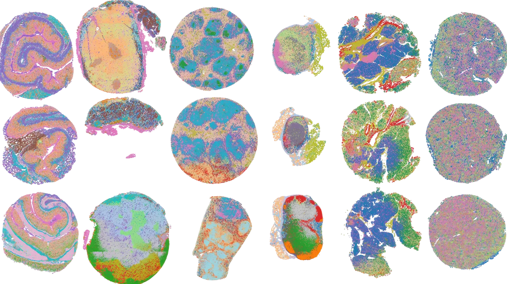
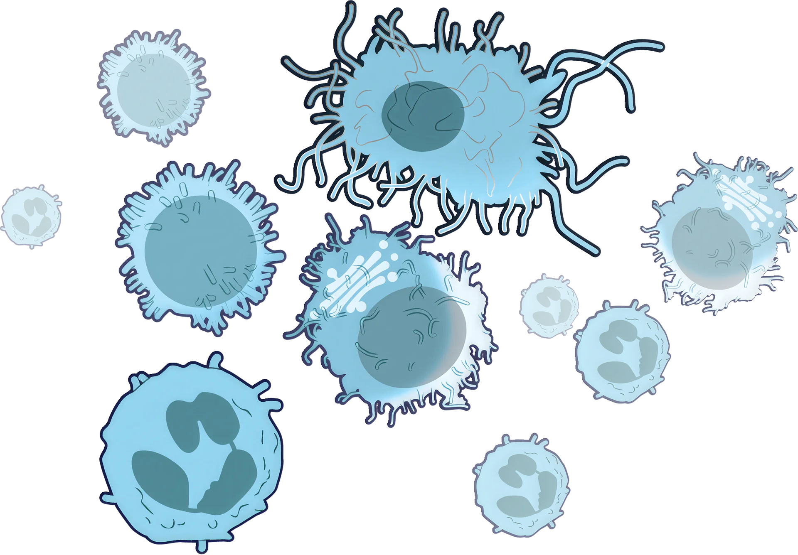
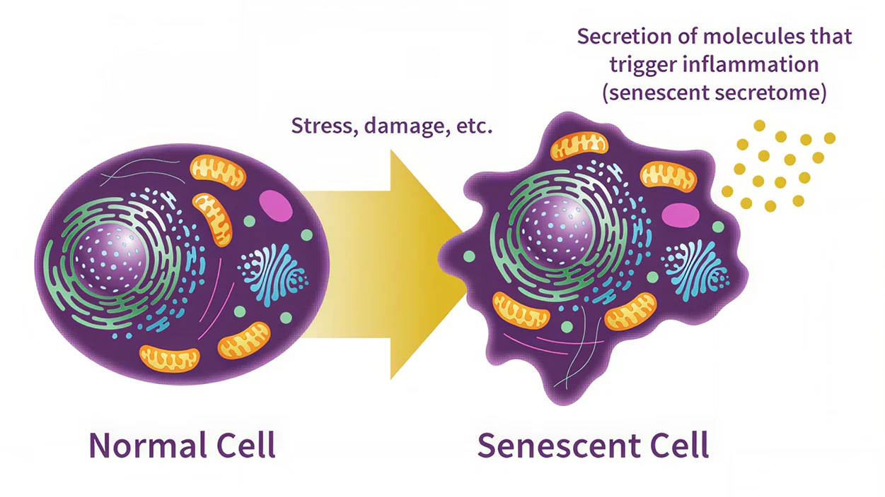
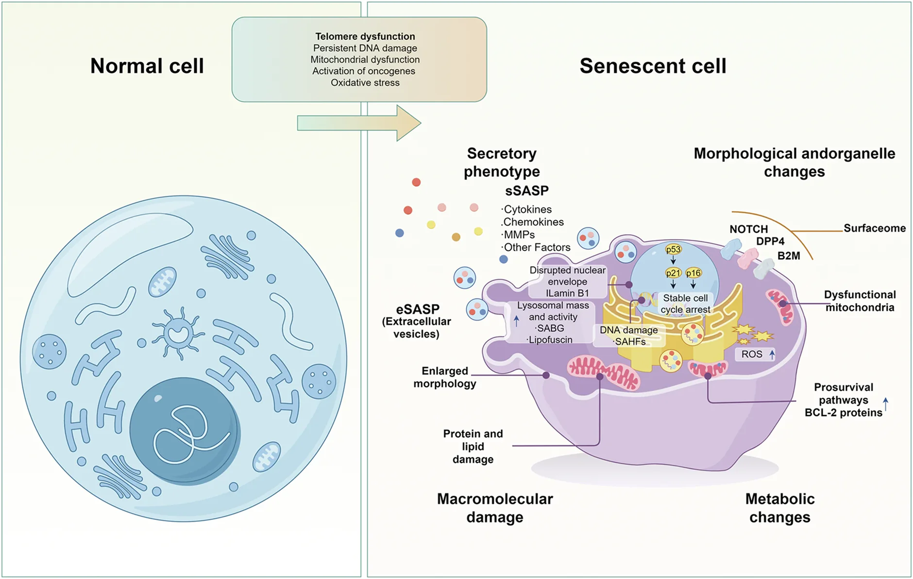
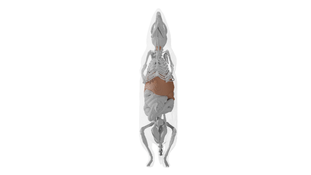
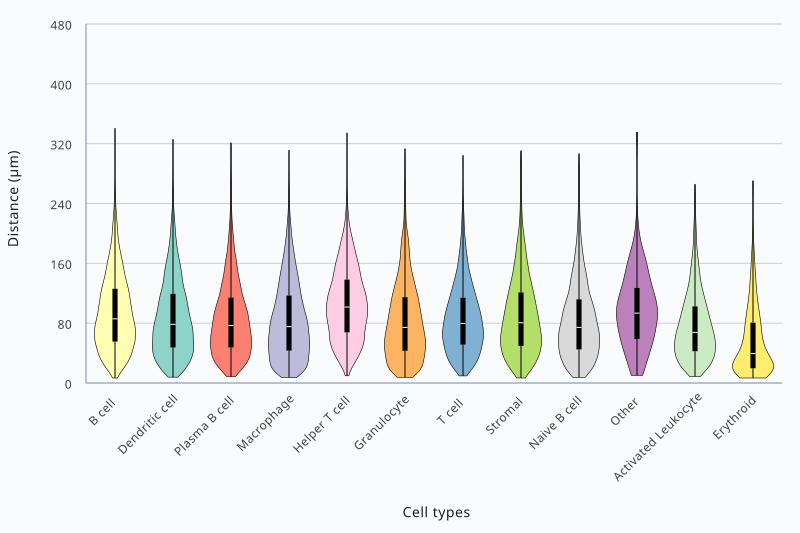
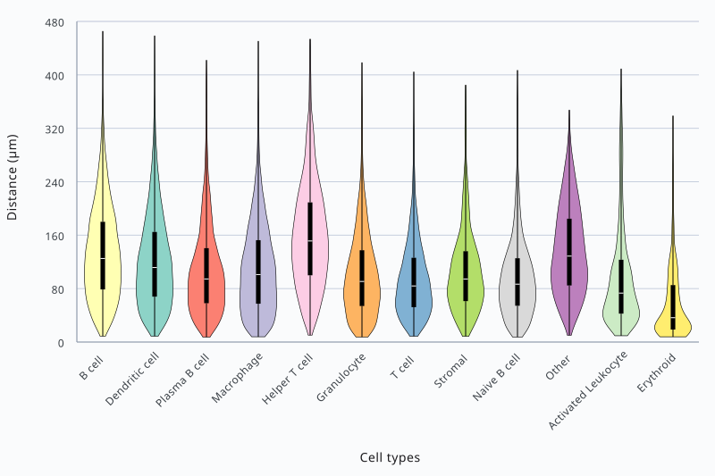
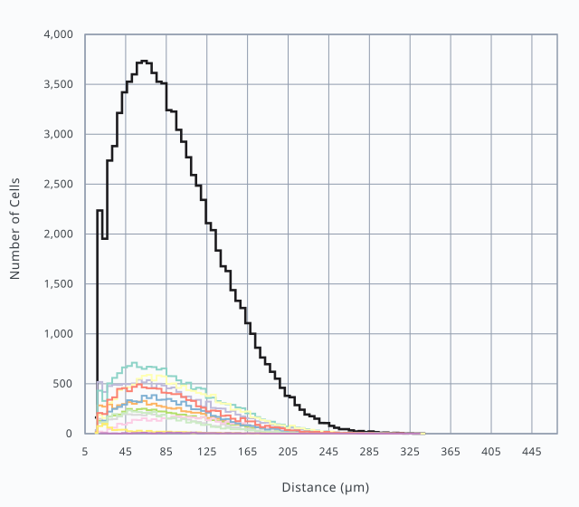
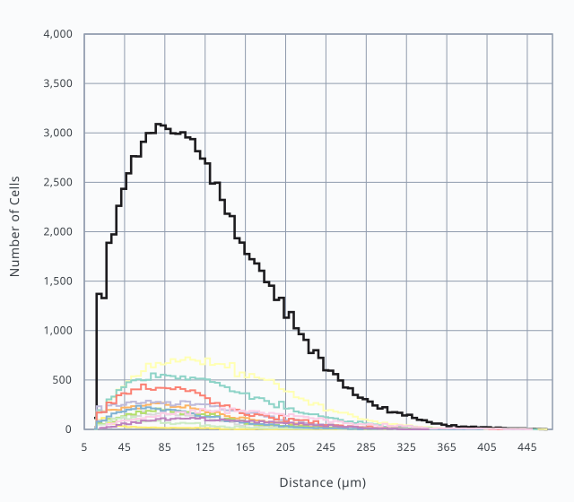

Pan-organ Immunosenescence Atlas
A story about how cells change over time
Created by Fan Lab at Yale University and the Cyberinfrastructure for Network Science Center at Indiana University
What is immunosenescence?
The immune system is a complex network of cells, tissues, organs, and the substances they make. It helps the body fight infections and other diseases. As we age, our immune system function becomes impaired. Our bodies have a harder time fighting off infections, controlling malignancies, and maintaining immune tolerance. This age-related deficiency in immune system function is called immunosenescence.

A key contributor to the immune system’s deterioration is cell senescence. This occurs when stress or damage to the cell causes it to exit the cell cycle. In this state of cell cycle arrest, the cell stops dividing but remains metabolically active. The senescent cell secretes a combination of bioactive molecules known as SASP—the senescence-associated secretory phenotype.

Cell senescence has some very important benefits for our health. It aids in embryo development, helps our bodies respond to injury, and works to keep cancer cells from replicating.
How senescent cells accumulate throughout the body

However, as we age, senescent cells accumulate. This may contribute to “inflammaging,” a chronic, low-grade inflammation that can damage healthy tissue, promote disease progression, and accelerate the aging process. In many cases, the body relies on immune cells to clear senescent cells and prevent them from accumulating.
This function is impaired when immune cells themselves become senescent. Immune-cell senescence can also weaken the immune system’s ability to detect disease and migrate to sites of infection or injury. A better understanding of cellular senescence is crucial to developing treatments that could improve our quality of life as we age.

Researchers in the field of senescence biology work to identify the many varieties of senescent cells, locate where they reside in the body, and understand the effects they have on their surrounding environments. A cell’s senescence phenotype—the physical and biochemical traits the cell exhibits once it becomes senescent—can vary widely depending on the cell type and the tissue microenvironment. These diverse and context-specific phenotypes make research on immune cell senescence a particular challenge.
For starters, the immune system is distributed throughout the body. It consists of many organs and multiple tissue types with their own distinct structures and functions. Immune cell researchers often find that existing datasets (whether bulk or single-cell sequenced) underrepresent immune cells or lack them entirely. When immune cells are present, they typically lack robust data on senescence. The immune system is not contained in a single “immune organ.”
Likewise, there is no single “immune cell” with one particular function.

Instead, there are many cell types with different structures and roles. Different immune cell types exhibit different senescence patterns/features. Senescence can be difficult to detect in immune cells since some of the recognized markers of senescence are part of the normal functioning of many immune cells. Since context matters in the study of immune-cell senescence, research needs to analyze many tissue types across various anatomical structures.
To study how senescent cells behave in a living organism, scientists often conduct their research using samples from laboratory mice.
Mouse anatomy used in senescence research
Mice have long been prized by medical researchers due to the many biological and genetic features they share with humans.
They are valuable to senescence research because their short lifespans allow scientists to observe the mechanics of aging over the space of months rather than decades.
This 3D mouse model shows the thymus, liver, spleen, and pancreas.

The Cellular Senescence Network (SenNet) Program is one such effort that seeks to identify and characterize the differences in senescent cells across the body, across various states of human health, and across the lifespan. They are creating atlases of senescent cells, the differences among them, and the molecules they secrete, using data collected from multiple human and model organism tissues.
SenNet is teaming with the Human Reference Atlas (HRA) to study the possibility that senescent cells may alter their tissue microenvironments.
What changes can we see between young, aged, and treated tissue?
Tissue comparison across young, aged, and treated mice
Researchers collected tissue from young mice, aged mice, and aged mice treated with dasatinib and quercetin (D&Q) drugs that target senescent cells.
In this comparison, young mice were 2 months old. Aged mice were 24 months old, including those treated with D&Q.
By mapping individual cells within liver, spleen, and thymus samples, researchers can compare how cellular patterns change with age—and whether those patterns change after treatment.
Each color represents a cell population. Compare where those populations appear, how densely they cluster, and which populations share the same neighborhoods across the three conditions.
Liver
-
Young

-
Aged

-
Aged + D&Q

Spleen
-
Young

-
Aged

-
Aged + D&Q

Thymus
-
Young

-
Aged

-
Aged + D&Q

What can we see?
Across the liver, spleen, and thymus, the colored cell populations differ in their distribution, clustering, and neighboring populations. These patterns also vary by organ, which is why each condition is compared within the same tissue.
What software exists to visualize cell differences over time?
The HRA Cell Distance Explorer tool can be used to measure how close cells are to one another, compare cell distances over time, and analyze cell neighborhoods in spatially resolved omics data.
The neighborhood-level analysis produced by the Cell Distance Explorer can be combined with more macro-level efforts to quantify spatial distribution to establish a metric and baseline that enable comparison across organs with different morphology.
Cell Distance Explorer tutorial
-
Let’s get familiar with the Cell Distance Explorer app. The interface is organized into a Cell Types table, a central tissue visualization, a violin graph, and a histogram.
-
The Cell Types table is highlighted. Show/hide cell types in the visualization and plots. Hide cell links from this table view. Update colors for individual cell types. Download CSVs for the current configurations of cell types, cell links, and cell type color map formatting.
-
The central Visualization panel is highlighted. Use the node distance visualization to navigate cells spatially:
- Zoom in and out with the mouse pinwheel or pinch using the trackpad
- Pan using CTRL/CMD + mouse drag, right click + mouse drag, or use the keyboard arrows
- Rotate the visualization using CTRL/CMD + keyboard arrows or with a mouse drag
-
The Violin Graph panel is highlighted. The violin plot shows cell-to-nearest-anchor cell distance distributions categorized by each cell type in the dataset.
-
The Histogram panel is highlighted. The histogram plot shows the cell-to-nearest-anchor cell distance distributions categorized by each cell type in the dataset.
Measuring distances between cells reveals how their spatial relationships change over time.
Comparing cell distances over time
Let’s compare spleen samples representing a mouse at ages 2 months and 24 months. Using the Cell Distance Explorer, we measured how far each cell type is from its nearest endothelial cell—the anchor cell for this comparison.
The node-distance visualization maps each cell coordinate and its connection to the nearest anchor cell. Compare the 2-month and 24-month spleen samples to see how cell clusters, distances, and neighborhoods differ with age.
Cell-network comparison


Cell types
- Activated leukocyte
- B cell
- Dendritic cell
- Endothelial
- Erythroid
- Granulocyte
- Helper T cell
- Macrophage
- Naive B cell
- Other
- Plasma B cell
- Stromal
- T cell
Violin plots show how distances from endothelial cells are distributed for each cell type. Compare where each distribution sits, how widely it spreads, and whether its overall pattern differs between the two ages.
Violin-plot comparison


Histograms show how many cells occur at each distance from the nearest endothelial cell. The black line represents all cells, while the colored lines represent individual cell types. Compare where the lines peak, how quickly they rise or fall, and how far they extend across the two ages.
Histogram comparison
Cell types
- Activated leukocyte
- All cells
- B cell
- Dendritic cell
- Erythroid
- Granulocyte
- Helper T cell
- Macrophage
- Naive B cell
- Other
- Plasma B cell
- Stromal
- T cell


The Cell Distance Explorer’s node-distance visualizations show the spatial grouping of cell types. The violin graphs summarize the shape and spread of each cell type’s distance distribution. The histograms show how many cells occur across those distances. This app makes cellular organization easier to identify while providing a starting point for closer analysis.
Conclusion
There is strong external evidence that immune senescence is implicated in tissue reorganization. Thus, monitoring the effects of senescence on the surrounding tissue, evaluating them, and treating them could vastly improve our health.